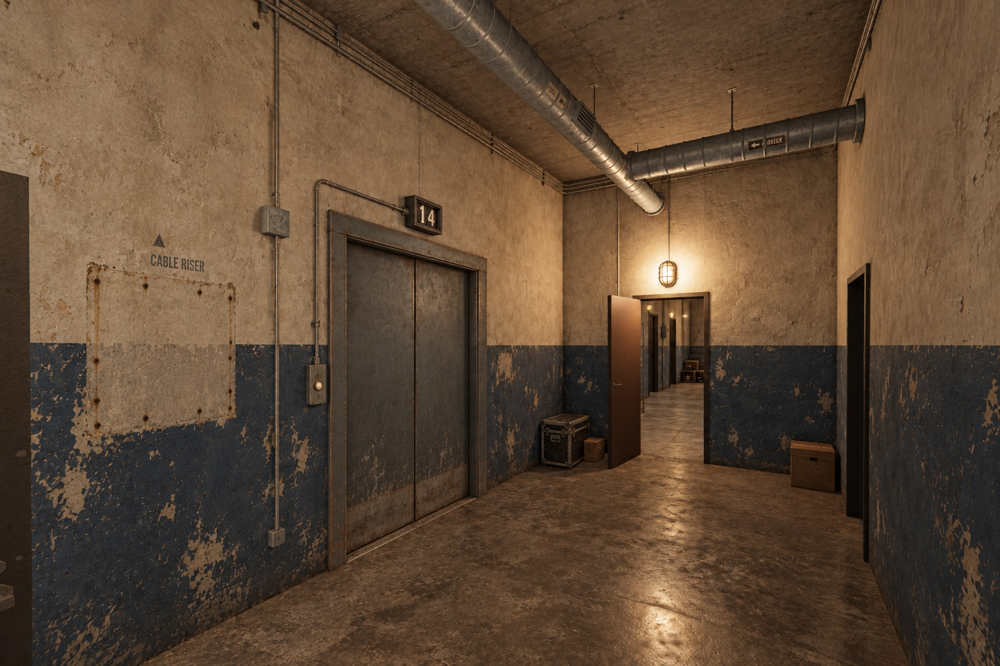
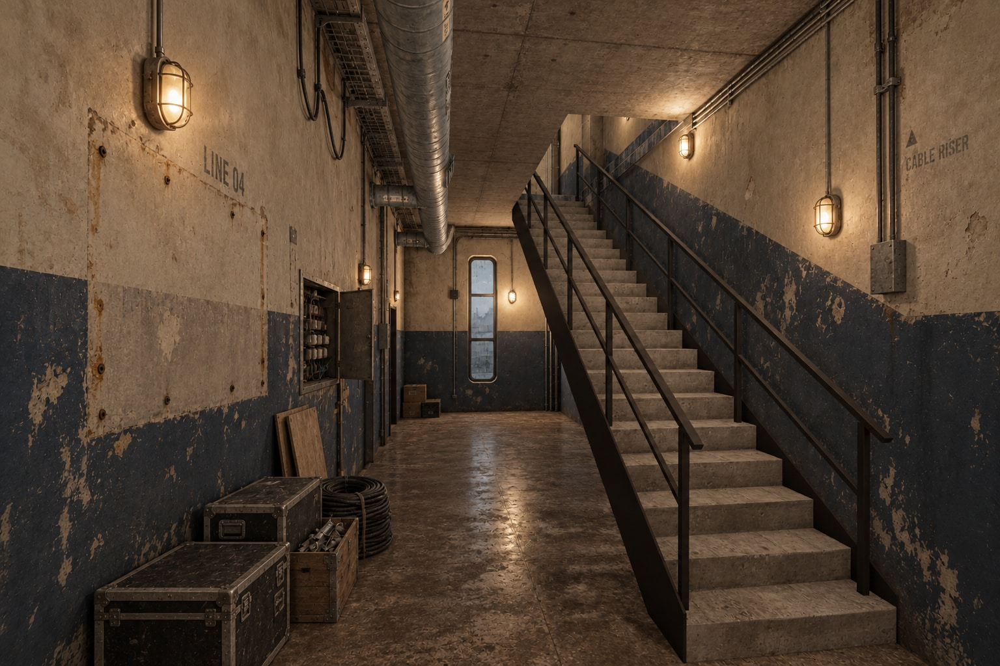
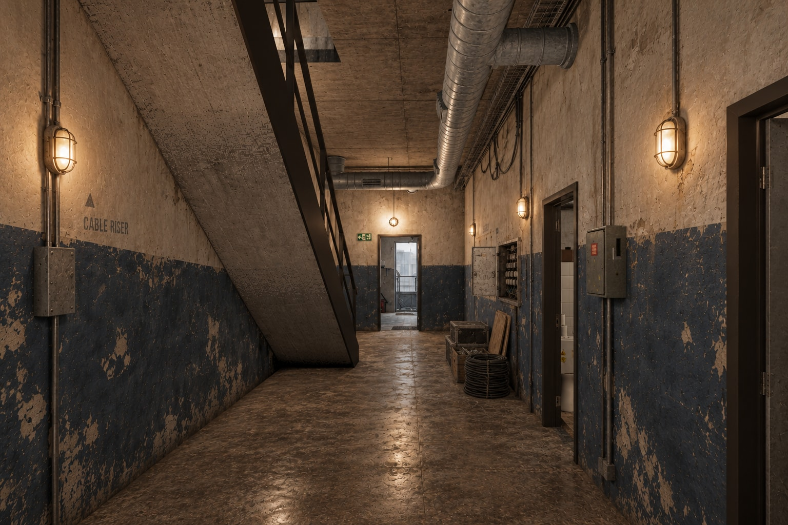
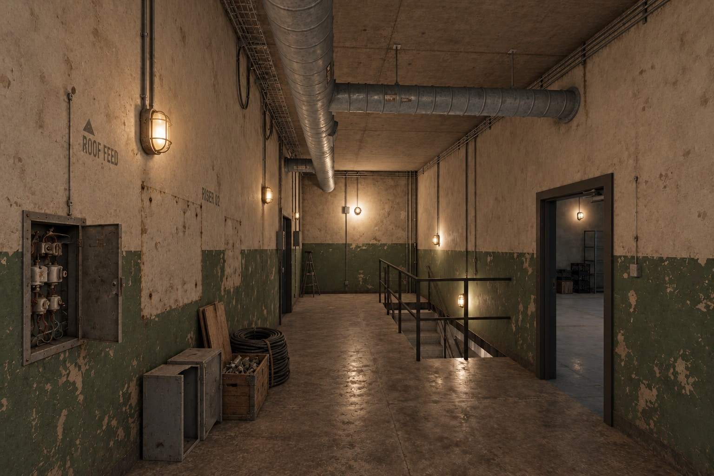
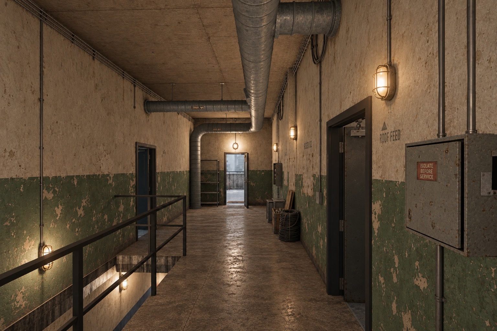
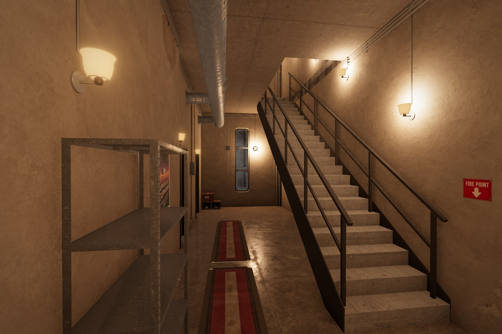
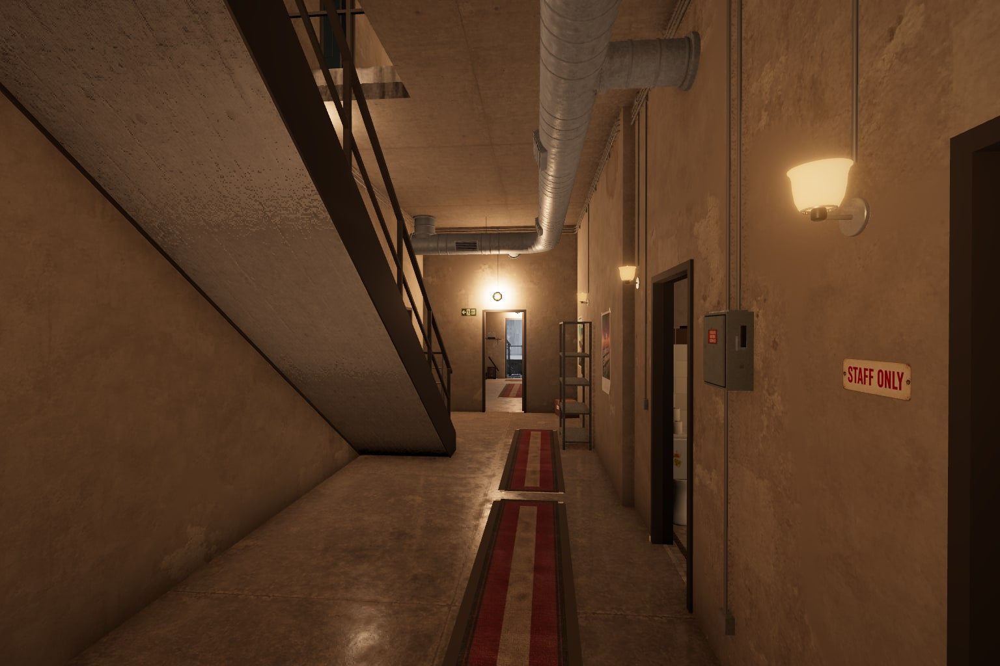
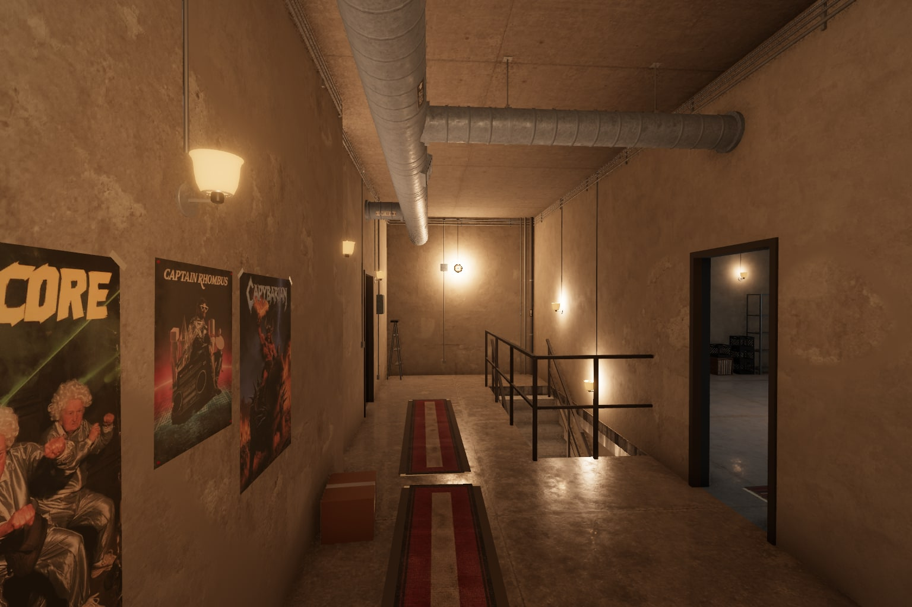
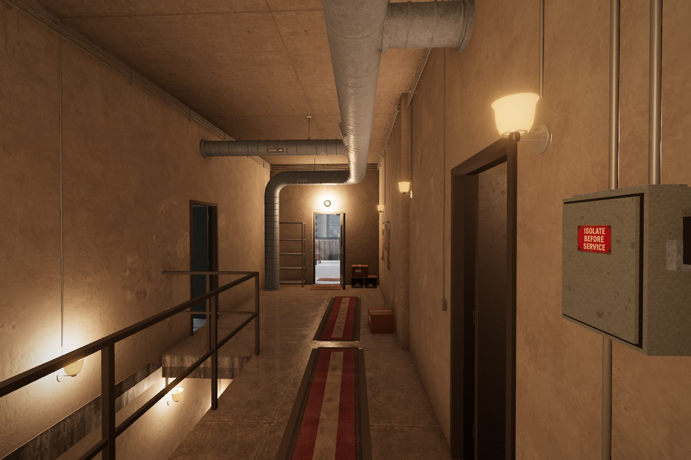

Leg City Sounds · Apartment · 11 October 2026
The telecom corridors
Stripped equipment, old paint and the beginnings of a salvage pile. The girls have started leaving useful finds here, but the former commercial tower still sets the mood: cabinet footprints, faded stencils, surviving conduits and dusty fuse hatches.
The closed service elevator
On the old Level14 wall: two shut steel leaves, a mechanical floor counter above, and the surviving conduit beside the frame.

Open elevator concept full sizeLower floor · worn navy blue
Vienna’s floor: navy below beige-white, plain steel service doors, and a few transport cases, boards and cable coils left against the wall. The paint scheme continues into the entry hall.


Open full size

Open full sizeUpper floor · worn service green
The landing keeps the same old building language in green. Empty electrical enclosures join the temporary pile, roof-feed markings survive, and the route beside the stair opening remains clear.


Open full size

Open full sizeCurrent apartment layout · reference views







